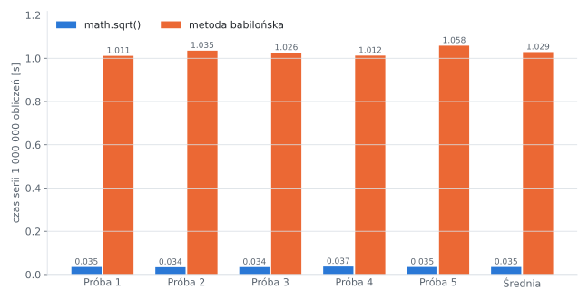
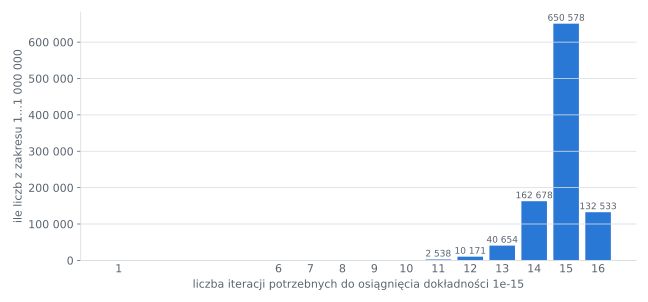

Tabela pomiarów
Czas wykonania całej serii 1 000 000 obliczeń pierwiastka (liczby 1…1 000 000), pięć prób:
| Próba | sqrt() | Metoda babilońska |
|---|---|---|
| 1 | 0,0347 s | 1,0112 s |
| 2 | 0,0337 s | 1,0353 s |
| 3 | 0,0342 s | 1,0255 s |
| 4 | 0,0369 s | 1,0123 s |
| 5 | 0,0348 s | 1,0582 s |
| Średnia | 0,0349 s | 1,0285 s |
math.sqrt()sqrt() ⇒ ok. 35 ns na jedną liczbę (razem z pętlą)
Analiza statystyczna
| Wielkość | sqrt() | Metoda babilońska |
|---|---|---|
| Minimum | 0,0337 s | 1,0112 s |
| Maksimum | 0,0369 s | 1,0582 s |
| Średnia | 0,0349 s | 1,0285 s |
| Odchylenie standardowe | 0,0012 s | 0,0194 s |
| Średni czas na jedną liczbę | 34,9 ns | 1029 ns |
| Średnia liczba iteracji | – | 14,84 |
Pomiary są powtarzalne – kolejne próby różnią się o kilka procent, co wynika z pracy systemu operacyjnego w tle. Różnica między metodami (ok. 29 razy) jest wielokrotnie większa niż rozrzut pomiarów, więc wynik jest wiarygodny.
Dokładność
Program porównał wyniki obu metod dla każdej z miliona liczb:
| Największy błąd bezwzględny | 1.137e-13 |
|---|---|
| Największy błąd względny | 2.220e-16 |
| Wyniki identyczne co do bitu | 750 888 z 1 000 000 (75,1 %) |
Największy błąd względny 2,22·10⁻¹⁶ to dokładnie epsilon maszynowy – w najgorszym przypadku wynik metody babilońskiej różni się od poprawnie zaokrąglonego wyniku sqrt() tylko ostatnim bitem. Błąd bezwzględny 1,14·10⁻¹³ dotyczy wyników bliskich 1000, gdzie sąsiednie liczby double są odległe o 1,14·10⁻¹³ – mniejszej różnicy nie da się zapisać. Wymagana dokładność 15 cyfr została więc osiągnięta dla wszystkich liczb.
Liczba iteracji
Przy przybliżeniu początkowym x₀ = S liczba iteracji rośnie wraz z wielkością liczby (mniej więcej jak log₂√S + 5). Większość liczb z zakresu jest duża, więc przeważnie potrzeba 15–16 kroków:

| Liczba iteracji | Ile liczb | Udział |
|---|---|---|
| 1 | 1 | 0,000 % |
| 6 | 2 | 0,000 % |
| 7 | 10 | 0,001 % |
| 8 | 40 | 0,004 % |
| 9 | 159 | 0,016 % |
| 10 | 636 | 0,064 % |
| 11 | 2 538 | 0,254 % |
| 12 | 10 171 | 1,017 % |
| 13 | 40 654 | 4,065 % |
| 14 | 162 678 | 16,268 % |
| 15 | 650 578 | 65,058 % |
| 16 | 132 533 | 13,253 % |
Surowy wynik programu
Python 3.11.15 | x86_64
Próba sqrt() [s] babilońska [s]
1 0.0347 1.0112
2 0.0337 1.0353
3 0.0342 1.0255
4 0.0369 1.0123
5 0.0348 1.0582
Średnia 0.0349 1.0285
Metoda babilońska jest 29.5x wolniejsza
Kontrola: suma sqrt = 666667166.458842, suma bab. = 666667166.458842
Maks. błąd bezwzględny: 1.137e-13
Maks. błąd względny: 2.220e-16
Wyniki identyczne bit w bit: 750888 / 1000000Dane w formie pliku: wyniki_python.csv · wyniki_python.json